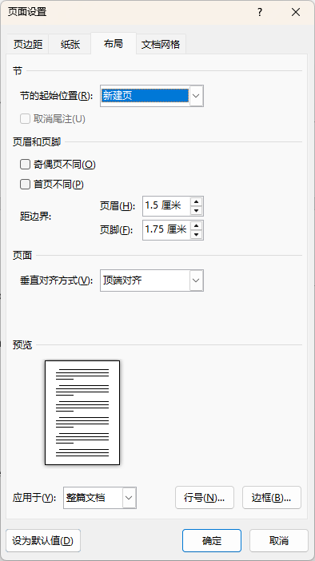
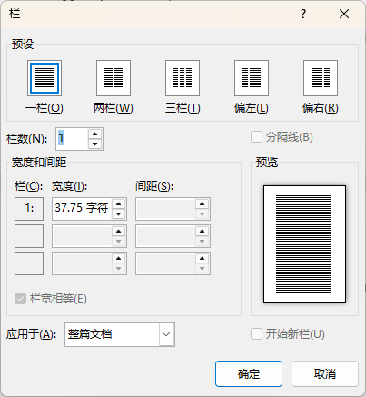
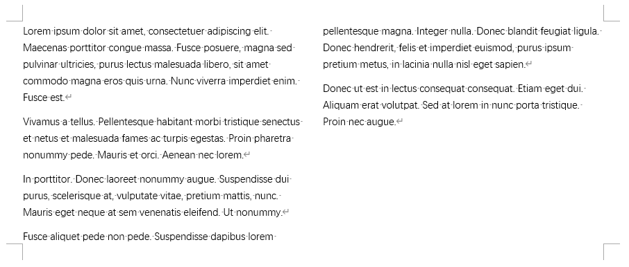
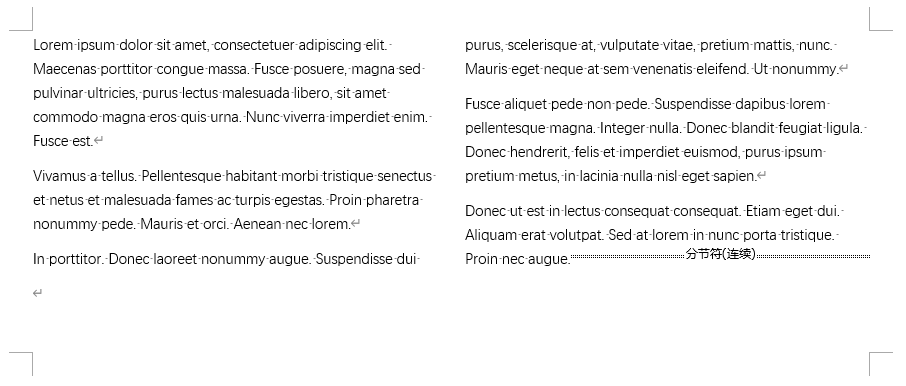
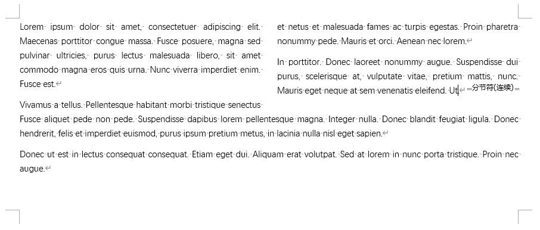
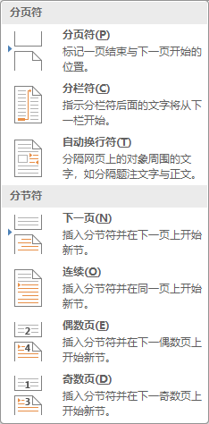
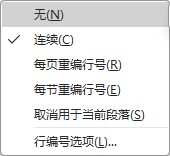

布局
Layout
- 内容 Contents
- 页面设置
页面设置 Page Setting
- 页面相关设置
页面设置
- 单击 ↘ 打开"页面设置"对话框，集成了"页边距"、"纸张"、"布局"和"文档网络"4个选项卡，进行更多设置

页面设置
- 文字方向
- 水平；默认
- 垂直
- ...
- 页边距
- 上
- 下
- 左
- 右
- 纸张方向
- 纵向；默认
- 横向
- 要实现混合排版，必须将页面放在不同的节中
- 纸张大小
- A4使用较多
打印水平、垂直居中的姓名牌
- 要求：
A4
横版
100号
一个页面只显示一个姓名
水平垂直居中
其它自定
- 提示：布局 → 页面 → 垂直对齐方向
- 栏
- 页面分栏布局
- "更多栏"对话框，功能更加丰富

文档属性
内容分布调整
- 以横向信封 #10 为例
- 全部内容分栏：可能出现左右内容分布不均衡

全部内容分栏
- 改进：定位光标在最后的段落末尾 → 布局 → 分隔符 → 分节符 → 连续

全部内容分栏
- 部分内容分栏：自动插入连续分节符

部分内容分栏
- 分隔符
- 分页符：
在同一节内，单纯的新起一页
再不要不断回车换行撑满到下一页了
快捷键：Ctrl + Enter
- 分节符 → 下一页：
默认都是在一节内操作，也可以插入分节符，开始新的一节
需要单独设置的内容，必须划分到不同的干节；如论文排版，要求彼此之间单独设置页眉、页脚、页码
也可以区分奇偶页设置

分隔符：分页符和分节符
这些是硬控制，需要手动添加；尽量在样式中指定，如段前分页
- 行号
- 默认不显示行号
- 连续
- 每页重复编号
- 每节重复编号

行号